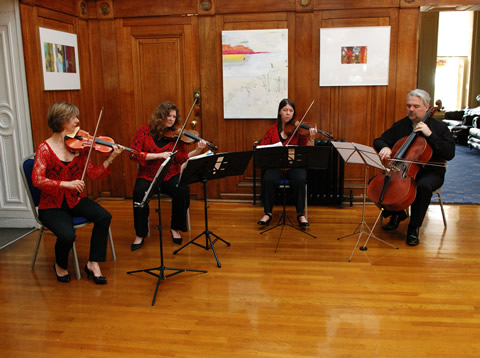

The Greenwich String Quartet
Wonderful Music For Your Function
"A very big thank you for the wonderful music; so many people commented on the quality of the quartet."
The quartet is very happy to enhance and complement many corporate events and celebrations, as as company dinners, receptions, birthday/Christmas/cocktail parties, anniversaries, bar mitzvahs, river trips, cruises, baptisms, reunions and exhibitions.

The quartet is based in the Greenwich area and performs at many prestigious venues in London, Kent and the South East. These include the Old Royal Naval College, Queen’s House, Eltham Palace, Claridges, the Dorchester and Savoy hotels, country house hotels, the Royal Academy of Arts, Queen Elizabeth II Conference Centre, National History Museum, Hampton Court Palace, Leeds Castle and luxury cruise liners.